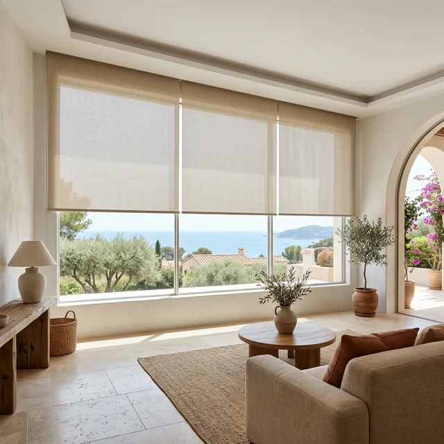
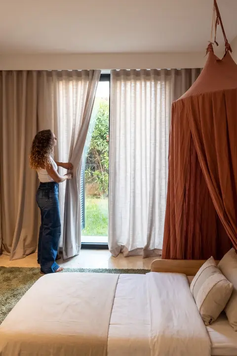
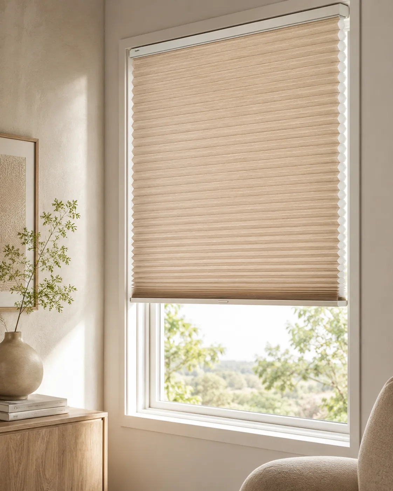
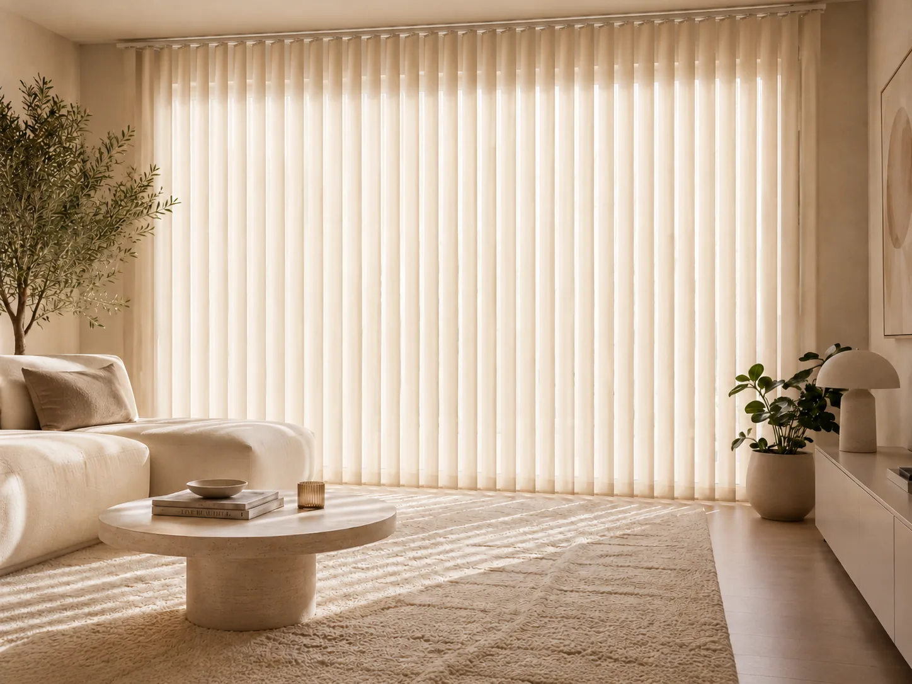
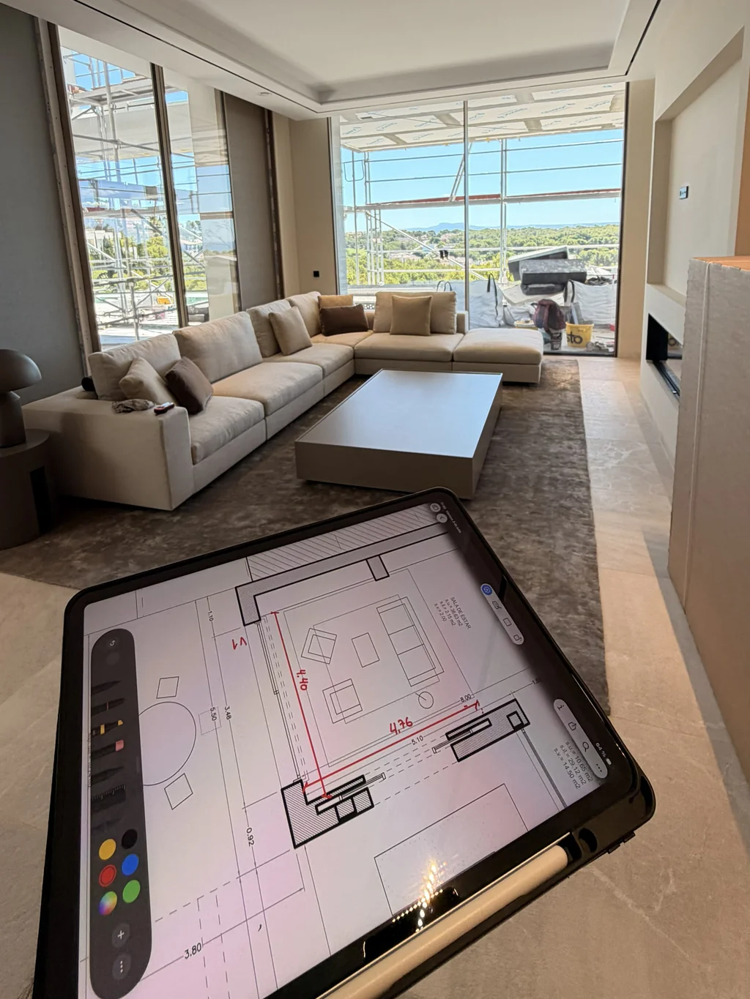
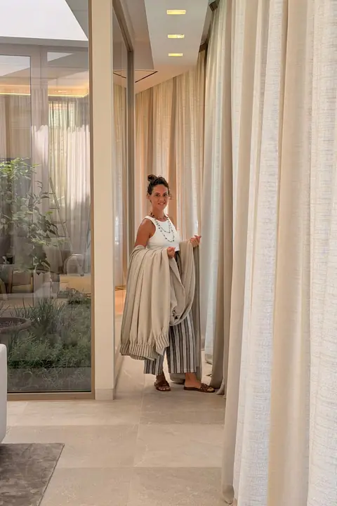
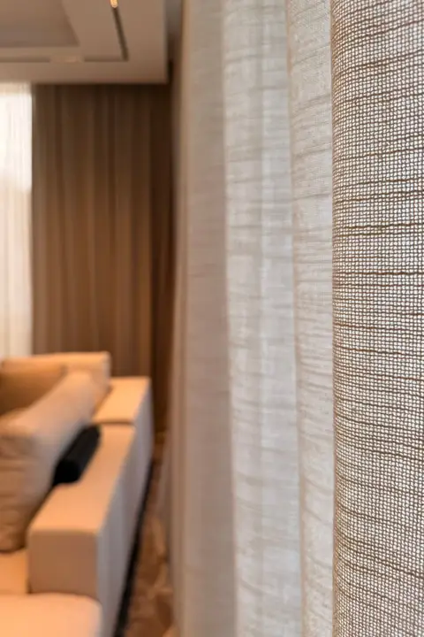
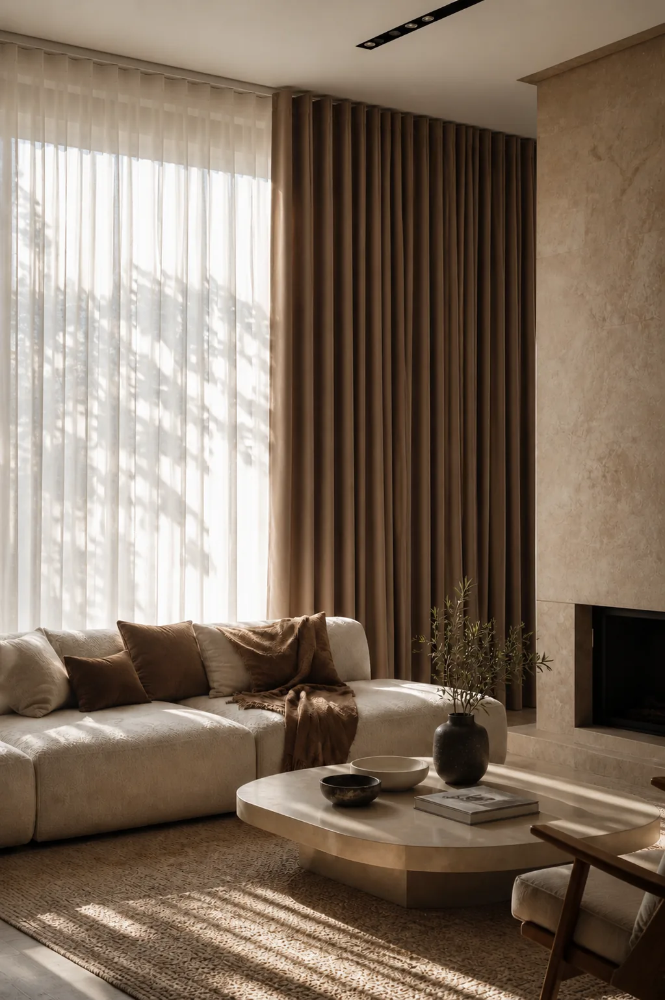
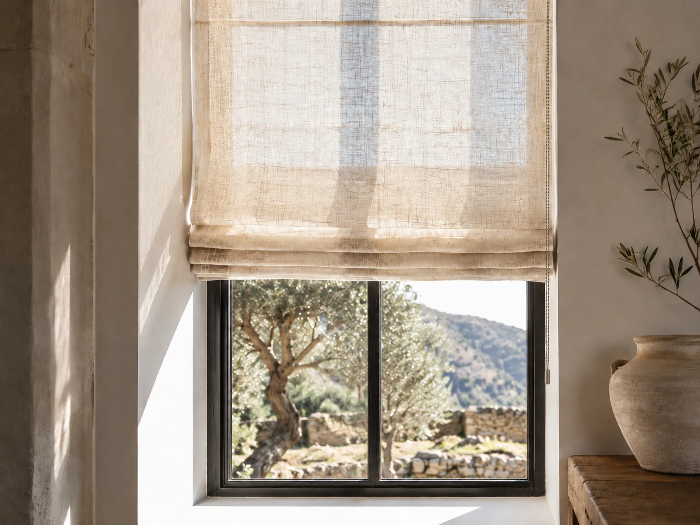

Ideas y guías para tus ventanas
Lo que nos preguntan en cada visita, explicado con calma: cómo medir, a qué altura colgar, qué tejido elegir y cómo cuidarlo para que dure años.

Estores enrollables: todo lo que tienes que saber
Enrollamiento, mecanismo, tejido y medida.
Leer
Estores seguros para niños
Cadenas, cordones y sistemas sin cadena.
Leer
Estor magnético encastrado
Dentro del hueco, con guías en U.
Leer
Cómo abrir una cortina vertical
Las cuatro recogidas y cuánto espacio ocupan las lamas.
LeerScreen 1, 3, 5 o 10 %: cuál elegir
Qué significa el porcentaje y cuál va en cada estancia.
Leer
Cómo medir tu ventana
Paso a paso, y por qué al final medimos nosotros.
Leer
A qué altura colgar las cortinas
Altura del riel, ancho, largo y color.
Leer
Cómo limpiar cortinas y estores
Cada tejido, a su manera.
Leer
Cuánto cuesta una cortina a medida
Las cinco variables que mueven el precio.
Leer
Qué estor para qué ventana
Enrollable, paqueto, plisado o sin taladrar.
Leer¿Prefieres que te lo expliquemos en casa?
En la visita resolvemos todas estas dudas con tu ventana delante y las muestras en la mano. Sin coste y sin compromiso.